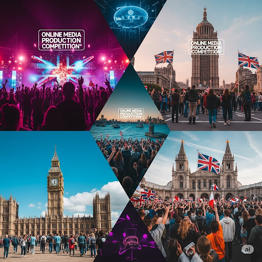

การแข่งขันผลิตสื่อออนไลน์
"การแข่งขันผลิตสื่อออนไลน์เป็นเวทีที่เปิดโอกาสให้ผู้มีความคิดสร้างสรรค์และทักษะด้านการสื่อสารดิจิทัลได้แสดงศักยภาพของตนเอง ในยุคที่เทคโนโลยีเข้ามามีบทบาทสำคัญในชีวิตประจำวัน การสร้างสรรค์เนื้อหาบนแพลตฟอร์มออนไลน์จึงไม่ใช่แค่เพียงงานอดิเรก แต่ยังเป็นเครื่องมือทรงพลังในการสื่อสาร ถ่ายทอดเรื่องราว และสร้างแรงบันดาลใจ การแข่งขันนี้จึงเป็นพื้นที่สำหรับนักสร้างสรรค์รุ่นใหม่ที่จะได้พิสูจน์ความสามารถและสร้างผลงานคุณภาพที่จะเป็นที่รู้จักในวงกว้าง"
